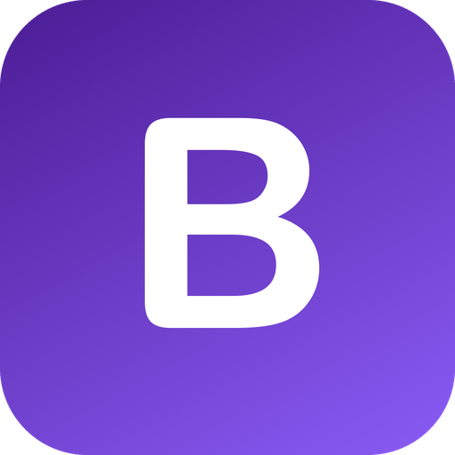

Signed Sileo source
APT repository for jailbreak tweaks by burc334
Install and update the jailbreak tweaks from a single Sileo source.

Source
Add this source in Sileo:
https://burc334.github.io/apt/
Packages
| Tweak | Description |
|---|---|
| NightNight | Hibernate device before the battery dies to save jailbroken state. |
| NotiFilter | Filter, mute, or allow notifications by app, content, and schedule. |
| SwipeSelection Reborn | Swipe the keyboard to move the caret and select text. |
| CopyLogFix18 | Fix the CopyLog 1.7.x pasted crash on iOS 18. |
| Hide Breadcrumbs | Hide the status bar "Back to App" breadcrumb. |
| Always Show Emoji Key | Keep the native emoji key always visible beside the spacebar. |
| AirDrop IPA Fix | Stop AirDrop from installing .ipa files automatically. |
| Carrier Hider | Hide the carrier name in the status bar. |
Install
- Open Sileo and go to Sources.
- Tap + and enter
https://burc334.github.io/apt/. - Add the source, refresh, and install a package.
All tweaks tested on iOS 18.4.1. Both rootless and roothide builds are included.
Signing
The repository is signed. The public key is available at repo-public.key.